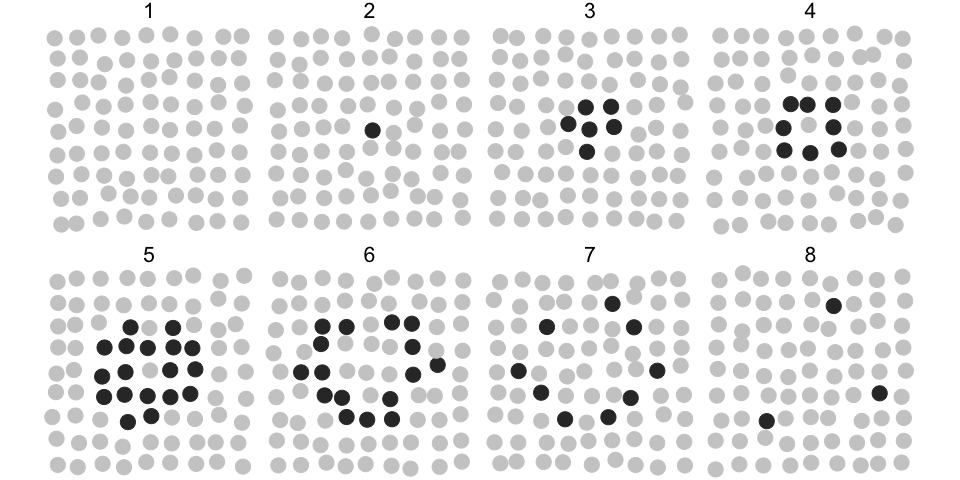
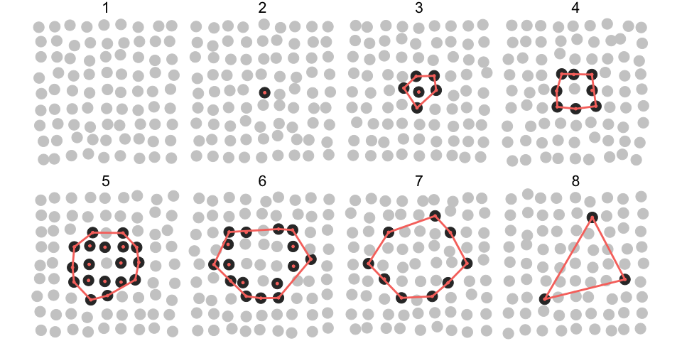

Automated Recognition of Collective Signalling (ARCOS) is an R package to identify space-time correlations in biological data. The associated publication is available on bioRxiv.
The software identifies and visualises collective protein activation in 2- and 3D cell cultures over time. Such collective phenomena have been recently identified in various biological systems. They have been demonstrated to play an important role in the: (1) maintenance of the epithelial homeostasis (Gagliardi et al., 2020, Takeuchi et al., 2020, Aikin et al., 2020), (2) acinar morphogenesis (Ender et al., 2020), (3) osteoblast regeneration (De Simone et al., 2021), and (4) coordination of collective cell migration (Aoki et al., 2017, Hino et al., 2020).
Despite its focus on cell signalling, the framework can be also applied to other spatially correlated phenomena that occur over time in an arbitrary spatial dimension.
Implementations
This repository covers the R implementation. For other implementations check:
- arcos4py, a Python implementation written by Benjamin Grädel.
- arcos-gui, a plugin with GUI for napari image viewer; written by Benjamin Grädel. See a YouTube demo.
Documentation for the entire ARCOS project can be found on gitbook.

arcos-gui plugin for napari image viewer
Installation
You can install the development version from GitHub with:
# install.packages("devtools")
devtools::install_github("dmattek/ARCOS")Data format
The minimal input comprises time series arranged in long format, where each row defines object’s location and time.
ARCOS defines an arcosTS object that extends the data.table class. In practice, additional attributes are added to the existing data.table object to define column names relevant for the analysis.
Example
The following synthetic dataset contains 81 objects (e.g., biological cells) spaced on a 2D 9x9 lattice with a spacing of 1x1 length units. Each object has an ID (column id) and can assume values 0 and 1 (column m), which correspond to an inactive and active state. The evolution of active states takes place over 8 consecutive time points (column t). Each object wiggles slightly around its position.
library(ARCOS)
library(ggplot2)
# Generate a synthetic dataset with a single event evolving over 8 frames
dts = ARCOS::genSynth2D(inSeed = 7)| t | x | y | m | id |
|---|---|---|---|---|
| 1 | 0.2287 | -0.15890 | 0 | 1 |
| 1 | 0.8803 | -0.11770 | 0 | 2 |
| 1 | 1.9310 | 0.07860 | 0 | 3 |
| 1 | 2.9590 | 0.18980 | 0 | 4 |
| 1 | 3.9030 | -0.04138 | 0 | 5 |
| 1 | 4.9050 | 0.06777 | 0 | 6 |
In the plot below, grey circles correspond to inactive and black to active states of objects and their collective activation (wave) develops over 8 time points.

The following R code will identify the collective event and store the result in a dcoll variable. We are interested in a collective event comprised of active objects, hence we select rows with m > 0. The parameter eps sets the threshold radius for the spatial clustering (dbscan algorithm). Here, we set eps = 2, which is enough to find all the nearest active objects in the cluster, given the 1x1 horizontal and vertical spacing of objects in the lattice.
# Track collective events
dcoll = ARCOS::trackColl(dts[m > 0],
eps = 2.)| t | id | collid.frame | collid | x | y | m |
|---|---|---|---|---|---|---|
| 2 | 41 | 1 | 1 | 4.157 | 3.915 | 1 |
| 3 | 32 | 2 | 1 | 3.890 | 2.989 | 1 |
| 3 | 40 | 2 | 1 | 3.086 | 4.194 | 1 |
| 3 | 41 | 2 | 1 | 3.998 | 3.955 | 1 |
| 3 | 42 | 2 | 1 | 5.060 | 4.063 | 1 |
| 3 | 50 | 2 | 1 | 3.838 | 4.911 | 1 |
The dcoll table contains the results of spatio-temporal clustering. Column collid stores a unique identifier of the collective event. The collid.frame column stores an identifier of collective event that is unique only within a frame.
For better visualisation, we add convex hulls around collective events using the chull function from the grDevices package.
# Create convex hulls around collective events for visualisation
dcollch = dcoll[,
.SD[grDevices::chull(x, y)],
by = .(t,
collid)]In the following plot, objects that participate in the collective event are indicated by red dots. The red polygon indicates a convex hull.

Save frames
The code below saves individual time frames as png files in the frames folder located in the current working directory.
ARCOS::savePlotColl2D(dts, dcoll,
outdir = "./frames",
xlim = c(-.5,9),
ylim = c(-.5,9),
plotwh = c(4,3),
imtype = "png")Individual files can be later combined into a movie using software such as ffmpeg.
For example, if you have ffmpeg installed on your system, create an mp4 movie at 2 frames/second and a 520x420 pixel resolution by typing the following line in the command line:
ffmpeg -framerate 2 -i "frames/F%04d.png" -vcodec libx264 -s 560x420 -pix_fmt yuv420p frames-all.mp4